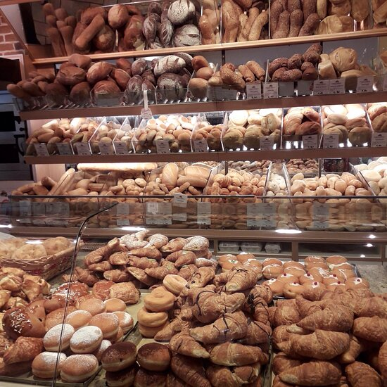

Home
Chi Siamo
Prodotti Tipici
Contatti
Il Panificio è pieno di prodotti artigianali di prima qulità Trentina. Le farine sono completamente Trentine e fatte da campi sostenibili.
Ecco lo Store Ufficiale:

"Copyright"